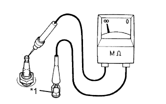
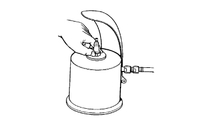

СИСТЕМА ЗАЖИГАНИЯ > ПРОВЕРКА БЕЗ СНЯТИЯ С АВТОМОБИЛЯ |
| 1. ВЫПОЛНИТЕ ПРОВЕРКУ "ИСКРЫ" НА МАССУ |
Проверьте коды DTC (Нажмите здесь).
Убедитесь в наличии искры.
Снимите 6 свечей зажигания (Нажмите здесь).
Установите свечу зажигания в катушку зажигания и подсоедините разъем катушки зажигания.
Снимите крышку блока реле моторного отсека.
Извлеките размыкающее реле (C/OPN) из блока реле моторного отсека.
Соедините свечу зажигания с массой.
Визуально проверьте, что при прокручивании двигателя возникает искра.
Проверьте надежность подключения разъема катушки зажигания (с усилителем зажигания) со стороны жгута проводов.
| Результат | Следующий шаг |
| NG | Подсоедините надежно |
| OK | Перейдите к следующему шагу |
Выполните проверку "искры" на массу для каждой катушки зажигания с усилителем зажигания.
Если в одном из цилиндров искра не возникает, замените катушку зажигания данного цилиндра на катушку зажигания цилиндра, в котором искра возникает нормально.
Прокрутите коленчатый вал двигателя стартером и проверьте, возникает ли искра в цилиндре с исправной катушкой зажигания.
| Результат | Следующий шаг |
| OK | Замените катушку зажигания с усилителем зажигания. |
| NG | Перейдите к следующему шагу |
Проверьте свечу зажигания.
Замените свечу зажигания исправной.
Снова выполните проверку "искры" на массу.
| Результат | Следующий шаг |
| OK | Замените свечу зажигания. |
| NG | Перейдите к следующему шагу |
Проверьте питание катушки зажигания с усилителем зажигания.
Установите замок зажигания в положение ON (ВКЛ).
Убедитесь, что на положительном контакте (+) катушки зажигания присутствует напряжение аккумуляторной батареи.
| Результат | Следующий шаг |
| NG | Проверьте проводку между замком зажигания и катушкой зажигания с усилителем зажигания. |
| OK | Перейдите к следующему шагу |
Замените датчик положения распредвала впускных клапанов (Нажмите здесь) и датчик положения распредвала выпускных клапанов (Нажмите здесь).
Проверьте датчик положения коленчатого вала (Нажмите здесь).
Установите 6 свечей зажигания (Нажмите здесь).
Установите размыкающее реле.
Установите крышку блока реле моторного отсека в сборе.
| 2. ПРОВЕРЬТЕ СВЕЧУ ЗАЖИГАНИЯ |
|  |
Проверьте электрод.
С помощью мегомметра измерьте сопротивление изоляции.
| Контакты для подключения диагностического прибора | Условие | Заданные условия |
| Свеча зажигания (контактная часть) - масса | Всегда | 10 МОм или более |
| *1 | Масса |
Альтернативный метод проверки:
Быстро разгоните двигатель до 4000 об/мин 5 раз.
Снимите свечу зажигания.
Осмотрите свечу зажигания.
Если электрод сухой, свеча зажигания работает должным образом. Если электрод влажный, перейдите к следующему шагу.
Проверьте резьбу и изолятор свечи зажигания на наличие повреждений.
При наличии повреждений замените свечу зажигания. При отсутствии повреждений установите свечу зажигания на место.
| Изготовитель | Изделие |
| Изготовитель DENSO | SK20HR11 |
|  |
Очистите свечи зажигания.
Проверьте межэлектродный зазор свечи зажигания.